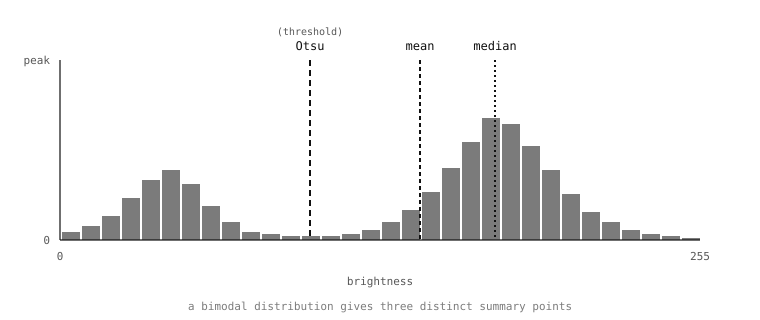

5.18. Histogramlar ve istatistikler¶
Bir görüntünün piksellerini değiştiren işlemlerin yanında, Image sınıfı bunları ölçen bir grup yöntem de barındırır – piksel değerlerinin dağılımını özetlemek, ortalama ve medyan parlaklığı döndürmek, koyu ve parlak pikseller arasındaki en uygun kesim noktasını bulmak, renk kanallarının yayılımını raporlamak. Ölçümler uygulamaları iki şekilde besler: hangi eşiğin kullanılacağına, hangi kazancın ayarlanacağına, sahnenin tonal profilinin nasıl göründüğüne karar veren koda girdi olarak; ve bir uygulamanın herhangi bir piksel hakkında karar vermeden üzerine eylemde bulunabileceği tanılayıcı sinyaller olarak – “sahne yeterince parlak mı?”.
Neredeyse her ölçümün başlangıç noktası histogramdır.
5.18.1. Histogram¶
Bir görüntünün histogramı, kaç pikselin olası her parlaklık değerine sahip olduğunun sayımıdır. Gri tonlamalı bir görüntü için bu, 0 ile 255 arasındaki değerlerle dizinlenmiş bir sayım listesidir. Renkli bir görüntü için ise böyle üç liste vardır – kanal başına bir tane.
get_histogram() bir tane hesaplar:
h = img.get_histogram()
Döndürülen nesne, kanal başına bölme listelerini ve bunlar üzerinde birkaç üst düzey sorguyu açığa çıkaran bir histogram sonucudur. Bölme sayımları, toplamları 1.0 olacak şekilde normalleştirilmiştir – histogram, mutlak piksel sayısı yerine dağılımın profilini tanımlar; bu da ölçümleri farklı boyutlardaki görüntüler arasında karşılaştırılabilir kılar.
Gri tonlamalı görüntüler için histogramın bir bölme kanalı vardır ve h.bins() (ya da eşdeğer olarak h[0]) ile erişilebilir. RGB565 görüntüler için histogram, ikili eşikleme sayfasında tanıtılan LAB renk uzayında hesaplanır ve h.l_bins(), h.a_bins(), h.b_bins() (ya da h[0], h[1], h[2]) ile üç bölme kanalı sağlanır. LAB, eşik ve izleme yöntemlerinin kullandığı aynı tercihtir; histogramlar, rengin hangi uzayda ölçüldüğü konusunda eşiklerle uyuşur.
5.18.2. Bölmeler ve bölme sayısı¶
Varsayılan histogramda olası her piksel değeri için bir bölme bulunur – 8 bitlik bir kanal için 256 bölme. Bazen bu, uygulamanın ihtiyaç duyduğundan daha ince bir çözünürlüktür. Yalnızca dağılımın kabaca profiliyle ilgilenen bir sınıflandırıcı, daha küçük bir bölme sayısıyla – 32 ya da hatta 8 bölme – daha iyi hizmet görebilir; bu hem daha hızlı çalışır hem de gürültüye karşı daha temiz bir sonuç üretir. bins anahtar sözcüğü (ve renk için kanal başına l_bins, a_bins, b_bins) sayımı ayarlar:
h = img.get_histogram(bins=32)
ROI ve eşik kapsamı, diğer her ölçüm yöntemindeki gibi çalışır. Histogramı bir piksel dikdörtgeniyle sınırlamak için bir roi geçirin; yalnızca bu aralıklarla eşleşen pikselleri dahil etmek için bir thresholds listesi geçirin. Eşik biçimi, “yalnızca eşleşen piksellerin histogramını hesapla”yı tek çağrılık bir işlem haline getiren şeydir – bir uygulama, önceden tespit edilmiş bir bölgenin dokusunu, pikselleri kendisi gezmek zorunda kalmadan karakterize etmek istediğinde sık görülen bir desendir.

Üç özet ölçümün bindirildiği gri tonlamalı bir histogram: Otsu eşiği (koyu ve parlak kümeleri en iyi ayıran kesim noktası), ortalama ve medyan. Her ölçüm aynı dağılım hakkında farklı bir şey söyler.¶
5.18.3. İstatistikler¶
Histogram, her değerin yaygınlığının bir tanımıdır; istatistikler ise bundan türetilen sayısal özetlerdir. get_statistics() tarafından döndürülen statistics nesnesi standart kümeyi taşır:
mean– piksel değerlerinin aritmetik ortalaması.median– piksellerin yarısının altında kaldığı değer.mode– en yaygın tekil değer.stdev– standart sapma, ortalama etrafındaki yayılımın bir ölçüsü.minvemax– mevcut en parlak ve en koyu piksel değerleri.lqveuq– alt ve üst çeyrek kesim noktaları.
RGB565 bir görüntü için kanal başına biçimler (l_mean, a_median, b_mode ve benzeri) aynı ölçümleri kanal kanal sunar.
Bu sayıların çoğu belirli bağlamlarda ortaya çıkar. mean ve stdev birlikte bir gürültü tahmini verir: tekdüze olması gereken bir sahnenin küçük bir stdev değeri vardır, gürültülü bir sensör ise aynı sahneye daha büyük bir stdev verir. min ve max görüntünün kontrastını verir: birbirlerine ne kadar yakınlarsa sahne o kadar düz olur; ne kadar uzaklarsa algoritmanın çalışacağı dinamik aralık o kadar fazladır. median, dağılımda aykırı değerler olduğunda sağlam bir merkezdir (birkaç çok parlak piksel medyanı, ortalamayı çektikleri gibi çekmez). mode, en yaygın tekil değerdir ve arka planı piksellerin çoğunu kaplayan bir görüntünün arka plan düzeyini bulmak için kullanışlıdır.
get_statistics() histogram geçişini dahili olarak çalıştırır ve ardından bunu özetler; önceden hesaplanmış bir histogramla aynı thresholds ve roi argümanlarını geçirmek, aynı piksel kümesi için istatistikleri üretir.
5.18.4. Yüzdelikler ve CDF aramaları¶
histogram nesnesi, bir kesri bir piksel değerine dönüştüren – istenen kesir kadar pikselin altında kaldığı değer – bir get_percentile() yöntemi açığa çıkarır. h.get_percentile(0.5) medyandır; h.get_percentile(0.05) ve h.get_percentile(0.95) birlikte, alttaki ve üstteki %5’i aykırı değer olarak yok sayan sağlam bir min/max verir.
Bu, bir uygulamanın piksel değerlerinin aralığını, bir avuç başıboş parlak ya da koyu pikselin yanıtı çarpıtmasına izin vermeden karakterize etmek istediğinde kullandığı biçimdir. 5. ve 95. yüzdeliklerden gelen sağlam min/max, ayrıca Tonal düzeltmelerin kapsadığı piksel başına yeniden eşleme olan bir kontrast germe geçişi için doğal girdidir.
5.18.5. Otsu yöntemi¶
Histogramlar, kendi başına anılmaya değer başka bir soruyu da yanıtlar: pikselleri bir “koyu” ve bir “parlak” kümeye ayrılan bir görüntü verildiğinde, aralarındaki kesim noktası nedir? Eşikleme sayfası bu mekanizmayı zaten sonucuyla adlandırmıştı – uygulamanın binary() yöntemine verebileceği tek bir küresel eşik – ama nasıl yapıldığını ertelemişti. Nasıl ise Otsu yöntemidir ve histogram üzerinde yaşar.
Sezgi şudur: net bir ön plana ve arka plana sahip bir görüntünün parlaklık histogramında iki küme ve aralarında bir vadi vardır. Eşikleme için doğru yer, vadinin dibidir – iki kümenin en iyi ayrıldığı değer. Otsu yöntemi olası her kesim noktasını araştırır ve küme içi varyansların en küçük olduğu (ki bu, kümeler arası varyansın en büyük olduğunu söylemekle aynıdır) noktayı seçer; sonuç, o belirli görüntünün dağılımı için en uygun ikili ayrımdır.
histogram nesnesi Otsu’yu get_threshold üzerinden açığa çıkarır:
h = img.get_histogram()
t = h.get_threshold()
Döndürülen threshold nesnesi, seçilen kesim noktasını taşıyan value (gri tonlama için) veya l_value / a_value / b_value (renk için) özniteliklerine sahiptir. Sonucu doğrudan binary() yöntemine geri vermek, kesim noktası görüntünün kendisi tarafından seçilen, kendi kendini ayarlayan bir küresel eşik verir:
img.binary([(t.value, 255)])
Bu desen, filtre tabanlı uyarlamalı eşiğin çözdüğü düzensiz aydınlatma sorununu çözmez; çözdüğü şey, küresel eşikleme zaten doğru yaklaşım olduğunda “hangi değerde kesmeliyim?” sorusudur. Ön plan / arka plan ayrımı iyi tanımlanmış bir sahne için Otsu’nun seçtiği değer genellikle bir insanın gözle seçeceği değerin birkaç birim içindedir.
5.18.6. Bir fark görüntüsü üzerinde hesaplama¶
get_histogram() ve get_statistics() üzerinde kullanışlı bir ayrıntı: her ikisi de başka bir Image alan ve kaynak ile o görüntü arasındaki piksel başına farkın histogramını (ya da istatistiklerini), ayrı bir fark görüntüsü tahsis etmeden hesaplayan bir difference anahtar sözcüğünü kabul eder. Bu, yalnızca ölçülmek amacıyla bir görüntü üretmek için açık bir difference() çağrısının bedelini ödemeden “sahne referans çerçevesinden bu yana ne kadar değişti?” diye sormanın ucuz yoludur. Sürekli çalışan bir hareket tespiti betiği için bu tasarruf birikir.